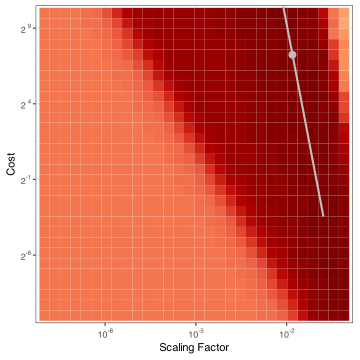
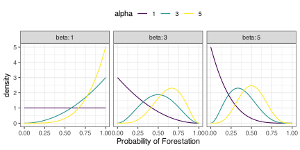
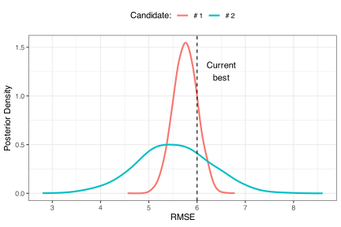
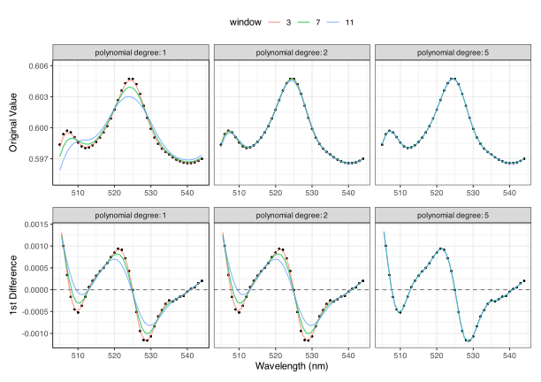
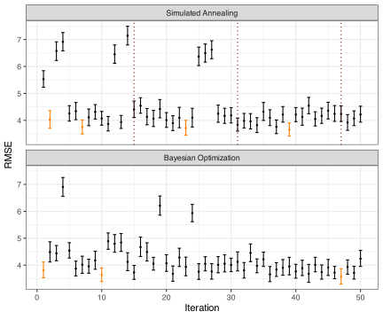

12 Iterative Search
Grid search is a static procedure; we predetermine which candidates will be evaluated before beginning. How can we adaptively optimize tuning parameters in a sequential manner? Perhaps more importantly, when is this a good approach?
Previously, we’ve seen that a plateau of good performance in the parameter space is possible. This is often the case but will not always be true. If the region of optimal performance is small, we must create a large space-filling design to find it. When there are many tuning parameters, the computational expense can be unreasonable. An even worse situation is one where the previously described speed-up techniques (such as the submodel trick from Section 11.3.1) are not applicable. Racing can be very efficient, but if the training set is very large, it may be that using a validation set is more appropriate than multiple resamples; in this case, racing cannot be used. Finally, there are practical considerations when the data set is very large. Most parallel processing techniques require the data to be in memory for each parallel worker, restricting their utility.
Generally, we are not often constrained by these issues for models used for tabular data. However, there are a few models that might be better optimized sequentially. The first two that come to mind are large neural networks1. and support vector machines2 (SVMs) (Schölkopf and Smola 2001; Shawe-Taylor and Cristianini 2004). For the former, as the number of layers increases, so does the number of tuning parameters. Neural networks also have many important tuning parameters associated with the model’s training, such as the learning rate, regularization parameters, etc. These models also require more preprocessing than others; they are suspectable to the effects of uninformative predictors, missing data, and collinearity. Depending on the data set, there can be many pre-model tuning parameters.
Support vector machines are models with fewer tuning parameters than neural networks but with similar preprocessing requirements. Unfortunately, the tuning parameter space can have large areas of poor performance with “islands” where the model works well. The location of these will change from data set to data set. We’ll see an example of this shortly where two model parameters are tuned.
These two models, in particular, are more likely to benefit from an optimization method that chooses candidates as the process evolves.
In theory, any iterative optimization procedures can be used. In general, gradient methods, such as steepest descent or Newton’s method, are the most commonly used technique for nonlinear optimization. These tools are suboptimal when it comes to parameter tuning but play important parts in other areas of machine learning and, for this reason, they will be discussed later.
Derivative-free techniques can be helpful for model tuning. Traditional examples are genetic algorithms, simulated annealing, particle swarm optimization, etc. We’ll consider the first two of these in Sections 12.3 and 12.4. Currently, the most well-known iterative tool for tuning models is Bayesian optimization. This will be examined in Section 12.6. However, before this, Section 12.5 will flesh out what it means for a model to be Bayesian.
To get started, let’s revisit a data set.
12.1 Example: Predicting Barley Amounts using Support Vector Machines
We’ll return to the data previously seen in Section 7.1 where we want to predict the percentage of barley oil in a mixture. Recall that the predictors are extremely correlated with one another. In Chapter 7, we considered embedding methods like PCA to preprocess the data and these models were able to achieve RMSE values of about 6% (shown in Figure 7.6).
In this chapter, we’ll model these data in two different scenarios. First, we’ll use them as a “toy problem” where only two tuning parameters are optimized for a support vector machine model. This is a little unrealistic, but it allows us to visualize how iterative search methods work in a 2D space. Second, in Section 12.7, we’ll get serious and optimize a larger group of parameters for neural networks simultaneously with additional parameters for a specialized preprocessing technique.
Let’s start with the toy example that uses an SVM regression model. This highly flexible nonlinear model can represent the predictor data in higher dimensions using a kernel transformation (Hofmann, Schölkopf, and Smola 2008). This type of function combines numeric predictor vectors from two data points using a dot product. There are many different types of kernel functions, but for a polynomial kernel, it is:
\[ k(\boldsymbol{x}_1, \boldsymbol{x}_2) = (a\boldsymbol{x}_1'\boldsymbol{x}_2 + b)^q \tag{12.1}\]
where \(a\) is called the scaling factor, \(b\) is a constant offset value, and \(q\) is the polynomial degree. The dot product of predictor vectors (\(\boldsymbol{x}_i\)) measures both angle and distance between points. Note that for the kernel function to work in an appropriate way, the two vectors must have elements with consistent units (i.e., they have been standardized).
The kernel function operates much like a polynomial basis expansion; it projects a data point into a much larger, nonlinear space. The idea is that a more complex representation of the predictors might enable the model to make better predictions.
For our toy example, we’ll take the 550 predictors, project them to a reduced space of 10 principal components, and standardize those features to have the same mean and standard deviation. A quartic polynomial with zero offset is applied, and the scale parameter, \(a\), will be tuned. This parameter helps define how much influence the dot product has in the polynomial expansion.
The most commonly adjusted parameter in SVMs is the cost value, which is independent of the chosen kernel function. This parameter determines how strongly the model is penalized for incorrect predictions on the training set. A higher cost value pushes the SVM to create a more complex model. As shown earlier in Figure 9.1, small cost values result in the SVM making less effort to classify samples correctly, leading to underfitting. In contrast, extremely high cost values cause the model to overfit to the training set.
Just as in Chapter 7, the RMSE will be computed from a validation set and these statistics will be used to guide our efforts.
Let’s define a wide space for our two tuning parameters: cost will vary from 2-10 to 210 and the scale factor3 is allowed to range from 10-10 to 10-0.1.
Figure 12.1 visualizes the RMSE across these ranges4 where darker colors indicate smaller RMSE values. The lower left diagonal area is a virtual “dead zone” with very large RMSE results that don’t appear to change much. There is also a diagonal wedge of good performance (symbolized by the darker colors). The figure shows the location of the smallest RMSE value and a diagonal ridge of parameter combinations with nearly equal results. Any points on this line would produce good models (at least for this toy example). Note that there is a small locale of excessively large RMSE values in the upper right. Therefore, increasing both tuning parameters to their upper limits is a bad idea.
In the next section, we explore gradient descent optimization and explain why it may not be suitable for model tuning. Following that, we delve into two traditional global search methods—simulated annealing and genetic algorithms—and their application in parameter space exploration. We then shift our focus to Bayesian optimization, concluding with an in-depth analysis of the barley prediction problem.
12.2 Sidebar: Gradient-Based Optimization
To formalize the concept of optimization, we need an objective function that defines what we are trying to optimize. This function, often called a loss function (specifically to be minimized), is denoted by \(\psi()\). The parameters that modify \(\psi()\) are represented by \(\boldsymbol{\theta}\), a \(p \times 1\) vector of real numbers. For simplicity, we will assume that \(\psi()\) is smooth and generally differentiable. Additionally, without loss of generality, we will assume that smaller values of \(\psi()\) are better.
We’ll denote the first derivative (\(\psi'(\boldsymbol{\theta})\)), for simplicity, as \(g(\boldsymbol{\theta})\) (\(p\times 1\)). The matrix of second deriviatives, called the Hessian matrix, is symbolized as \(H(\boldsymbol{\theta})\) (\(p\times p\)).
We start with an initial guess, \(\boldsymbol{\theta}_0\), and compute the gradient at this point, yielding a \(p\)-dimensional directional vector. To get to our next parameter value, simple gradient descent uses the update:
\[ \boldsymbol{\theta}_{i+1} = \boldsymbol{\theta}_i - \alpha\:g(\boldsymbol{\theta}_i) \tag{12.2}\]
The value \(\alpha\) defines how far to move in the chosen direction. It can either be a fixed constant5 or adjusted using a secondary method called a line search. In a line search, \(\alpha\) is incrementally increased until the objective function worsens.
We proceed to iterate this process until some measure of convergence is achieved. For example, the optimization could be halted if the objective function does not improve more than a very small value. Lu (2022) and Zhang (2019) are excellent introductions to gradient-based optimization that is focused on training models.
As a simple demonstration, Figure 12.2 shows \(\psi(\theta) = \theta\: cos(\theta/2)\) for values of \(\theta\) between \(\pm 10.0\). We want to minimize this function. There is a global minimum at about \(\theta \approx 6.85\) while there are local minima at \(\theta = -10.0\) and \(\theta \approx -1.72\). These are false solutions where some search procedures might become trapped.
#| label: shiny-grad-descent
#| viewerHeight: 600
#| viewerWidth: "100%"
#| standalone: true
library(shiny)
library(bslib)
library(ggplot2)
library(dplyr)
source("https://raw.githubusercontent.com/aml4td/website/main/R/shiny-setup.R")
source("https://raw.githubusercontent.com/aml4td/website/main/R/shiny-gd.R")
appThe figure enables the choice of \(\theta_0\), the value of \(\alpha\), and how many iterations to used. Consider a few configurations:
Starting at \(\theta = 3\), a learning rate of \(\alpha = 2.0\) is inappropriate. The search initially moves towards the global minimum but then reverses course and jumps past the best value, then becomes trapped around one of the local optima.
If we keep \(\theta = 3\) and decrease learning rate to \(\alpha = 1.0\), we quickly find the best result.
However, if we tried decreasing the learning rate too low, say \(\alpha = 0.01\), the optimization moves too slowly.
The learning rate plays a crucial role in the optimization process. Additionally, the starting value is significant; values below 2.0 consistently fail to reach the optimum.
This gradient descent algorithm outlined above is extremely basic. There are far more complex versions, the most well-known of which is the Newton-Raphson method (a.k.a. Newton’s Method) that incorporates the second derivative matrix \(H(\boldsymbol{\theta})\) in the updating formula6.
We often know when gradient-based optimization will work well. If we know the equation for the objective function, we can determine its properties, such as whether it is a convex function, and theory can tell us if a global optimum can be found via the use of gradients. For example, squared error loss \(\psi(\boldsymbol{\theta}) = (y-\hat{y})^2\), is convex when the relationship for the predicted value \(\hat{y}\) is a well-behaved function of \(\boldsymbol{\theta}\) (such as in linear regression).
However, there are additional considerations when it comes to optimizations for predictive models. First, since data are not deterministic, the loss function is not only a random variable but can be excessively noisy. This noise can have a detrimental effect on how well the optimization proceeds.
Second, our objective function is often a performance metric, such as RMSE. However, not all metrics are mathematically well-behaved—they may lack smoothness or convexity. In the case of deep neural networks, even when the objective function is simple (e.g., squared error loss), the model equations can create a non-convex optimization landscape. As a result, the optimized parameters may correspond to a local optimum rather than a global one.
This issue arises because traditional gradient-based methods are inherently greedy. They optimize by moving in the direction that appears most favorable based on the current estimates of \(\boldsymbol{\theta}\). While this approach is generally effective, it can lead to the optimization process becoming trapped in a local optimum, particularly with complex or non-standard objective functions.
There are additional complications when the tuning parameters, \(\boldsymbol{\theta}\), are not real numbers. For instance, the number of spline terms is an integer, but the update equation might produce a fractional value for this number. Other parameters are qualitative, such as the choice of activation function in a neural network, which cannot be represented as continuous numerical values.
During model tuning, we know to avoid repredicting the training set (due to overfitting). Procedures such as resampling make the evaluation of \(\psi()\) computationally expensive since multiple models should be trained. Unless we use symbolic gradient equations, the numerical process of approximating the gradient vector \(g(\boldsymbol{\theta})\) can require a large number of function evaluations.
Later, we’ll discuss stochastic gradient descent (SGD) (Prince 2023, chap. 6). This method is commonly used to train complex networks with large amounts of training data. SGD approximates the gradient by using only a small subset of the data at a time. Although this introduces some variation in the direction of descent, it can be beneficial as it helps the algorithm escape from local minima. Additionally, when dealing with large datasets, computer memory may not be able to store all the data at once. In such cases, SGD is often the only viable option because it doesn’t require the entire dataset to be loaded into memory and can also be much faster.
Until then, the next three chapters will describe different stochastic optimization, gradient-free methods that are well-suited for parameter tuning since they can sidestep some of the issues described above.
12.3 Simulated Annealing
Non-greedy search methods are not constrained to always proceed in the absolute best direction (as defined by the gradient). One such method is simulated annealing (SA)(Kirkpatrick, Gelatt, and Vecchi 1983; Spall 2005). It is a controlled random search that moves in random directions but with some amount of control over the path. It can also incorporate restarts if the algorithm moves into clearly poor regions.
Given an initial solution, simulated annealing (SA) creates a random perturbation of the current candidate solution, typically within a small local neighborhood. The objective function is then evaluated for the new candidate and compared to the previous solution. If the new candidate results in an improvement, the process moves forward by using it to make the next step. If the new candidate is worse, there are two options:
- We can accept the current solution as “suboptimal” and use it as the basis for the next perturbation, or
- we can discard the current solution and treat it as if it never occurred. The next candidate point will then be a perturbation of the last “acceptable” solution.
For our SVM example, suppose we start with a candidate where
\[x_0 = \left[log_2 (cost), log_{10} (scale)\right] = [-10, -0.1]\]
and had an associated RMSE value of 6.10%. For the next candidate, a perturbation of this values is created, say \(x_1 = [-7.11, -0.225]\). Suppose that the corresponding RMSE was measured at 5.97%. Since \(x_1\) has a better performance metric it is automatically accepted and is used to create the next parameter.
However, suppose that the RMSE value for \(x_1\) was 7.00%, meaning that the new candidate did worse than the initial one. In this case, simulated annealing generates a probability threshold for accepting the worse solution. Typically, the probability depends on two quantities:
Simulated annealing generates a probability threshold for accepting the worse solution. Typically, the probability depends on two quantities:
- The difference between the current and previous objective function values. If the new candidate is nearly as good as the current solution, the probability of acceptance will be higher compared to a candidate that is significantly worse.
- The probability of acceptance should decrease over time as the search progresses. This is often achieved using an exponentially decaying function, known as the “cooling schedule.”
An often used equation for the probability, assuming that smaller values are better, is
\[ Pr[accept] = \exp\Bigl[-i\bigl(\hat{Q}(\boldsymbol{\theta}_{i}) - \hat{Q}(\boldsymbol{\theta}_{i-1})\bigr)\Bigr] \]
where \(i\) is the iteration number. To compare 6.1% versus 7.0%, the acceptance probability is 0.407. To make the determination, a random uniform number \(\mathcal{U}\) is generated and, if \(\mathcal{U} \le Pr[accept]\), we accept \(\boldsymbol{\theta}_{i}\) and use it to make \(\boldsymbol{\theta}_{i+1}\). Note that the probability “cools” over time; if this difference were to occur at a later iteration, say \(i = 5\), the probability would drop to 0.0111.
One small matter is related to the scale of the objective function. The difference in the exponent is very sensitive to scale. If, for example, instead of percentages we were to use the proportions 0.61 and 0.70, the probability of acceptance would change from 40.7% to 91.4%. One way to mitigate this issue is to use a normalized difference by dividing the raw difference by the previous objective function (i.e., (0.70-0.61) / 0.70). This is the approach used in the SA analyses here.
This process continues until either a pre-defined number of iterations is reached or there is no improvement after a certain number of iterations. The best result found during the optimization process is used as the final value, as there is no formal concept of “convergence” for this method. Additionally, as mentioned earlier, a restart rule can prevent simulated annealing from getting stuck in suboptimal regions if no better results have been found within a certain timeframe. When the process is restarted, it can either continue from the best candidate found in previous iterations or start from a random point in the parameter space.
How should the candidates be perturbed from iteration to iteration? When the tuning parameters are all numeric, we can create a random distance and angle from the current values. A similar process can be used for integers by “flooring” them to the nearest whole number. For qualitative tuning parameters, a random subset of parameters is chosen to change to a different value chosen at random. The amount of change should be large enough to search the parameters space and potentially get out of a local optimum.
It is important to perform computations on the parameters in their transformed space to ensure that the full range of possible values is treated equally. For example, when working with the SVM cost parameter, we use its log (base 2) scale. When perturbing the parameter values, we make sure to adjust them in the log space rather than the original scale. This approach applies to all other search methods discussed in this chapter.
To illustrate, a very small initial space-filling design with three candidates was generated and evaluated. The results are in Table 12.1. To start the SA search7, we will start with the candidate with the smallest RMSE and proceed for 50 iterations without a rule for early stopping. A restart to the last known best results was enforced after eight suboptimal iterations.
| RMSE (%) | Cost (log-2) | Scale (log-10) |
|---|---|---|
| 6.10 | -10 | -0.1 |
| 7.33 | 10 | -5.0 |
| 17.04 | 0 | -10.0 |
Figure 12.3 contains an animation of the results of the SA search. In the figure, the initial points are represented by open circles, and a grey diagonal line shows the ridge of values that corresponds to the best RMSE results.
#| label: shiny-sa-example
#| viewerHeight: 600
#| viewerWidth: "100%"
#| standalone: true
#| fig-alt: A two-dimensional parameter space with axes for the scale parameter and the SVM cost is shown. Three initial points are shown. The SA algorithm progresses from a point with low cost and a large value of the scale factor to meander to the ridge of optimal performance, starting several times along the way.
library(shiny)
library(bslib)
library(ggplot2)
library(dplyr)
library(purrr)
library(scales)
source("https://raw.githubusercontent.com/aml4td/website/main/R/shiny-setup.R")
source("https://raw.githubusercontent.com/aml4td/website/main/R/shiny-sa.R")
appDuring the search, there were 4 iterations where a new global best result was discovered (iterations 1, 14, 15, and 40). There were also 5 restarts at iterations 9, 23, 31, 39, and 48. In the end, the best results occurred with a cost value of 2-2.5 and a scale factor of 10-0.98. The corresponding validation set RMSE was 5.78%. With this random seed, the search gets near the ridge of best performance shown in Figure 12.1 but only lingers there for short times. It does spend a fair amount of time meandering in regions of poor performance.
Simulated annealing has several attractive qualities. First, the process of generating new candidates works with any type of parameter, whether real, integer, or qualitative. This is not true for the other two iterative methods we’ll discuss. Additionally, the perturbation process is very fast, meaning there is minimal computational overhead to compute the next objective function value. Since we are effectively generating new candidate sets, we can also apply constraints to individual parameters or groups of parameters. For example, if a tuning parameter is restricted to odd integers, this would not pose a significant problem for simulated annealing.
There are a few downsides to this method. Compared to the other search methods, SA makes small incremental changes. If we start far away from the optimum, many iterations might be required to reach it. One way to mitigate this issue is to do a small space-filling design and start from the best point (as we did). In fact, applying SA search after a grid search (perhaps using racing) can be a good way to verify that the grid search was effective.
Another disadvantage is that a single candidate is processed at a time. If the training set size is not excessive, we could parallel process the multiple candidates simultaneously. We could make a batch of perturbations and pick the best value to keep or apply the probabilistic process of accepting a poor value.
This optimization took 31.5s per candidate to execute for these data.
12.4 Genetic Algorithms
Genetic algorithms (GAs) (Mitchell 1996; Eiben and Smith 2015) are an optimization method that mimics the process of evolution through natural selection. While GAs are not ideally suited for parameter tuning in our case—since a standard GA search typically requires hundreds to millions of objective function evaluations—we will limit the search to a smaller scale for practical reasons. Nevertheless, genetic algorithms can often find solutions near the optimal value fairly quickly. Additionally, as previously mentioned, there is usually a region of acceptable candidates. Finally, GAs are highly unlikely to become trapped in a locally optimal solution.
Instead of search iterations, genetic algorithms are counted in generations. A generation is a group of candidate values that are evaluated at the same time (as a batch)8. Once their corresponding performance metrics are computed, a small set of the best candidates is selected and is used to create the next generation via reproduction. Reproduction would entail combining a pair of “parent” candidates by swapping information9, and then random mutations can be applied. Once the next generation is created, the process continues for some pre-defined time limit or maximum number of generations.
How, exactly, does this work? The first step is to pick a numerical representation for each candidate. Let’s consider methods for our main types of data.
Real-Valued Parameters
For real numbers, there are two encoding methods: one option is to keep them as-is (i.e., floating point values) and another converts the values to a binary encoding.
When keeping the values as real numbers, we can make two children from a pair of well-performing candidates via a linear combination. For candidate vectors \(\boldsymbol{\theta}_j\), we can use:
\[ \begin{align} \boldsymbol{\theta}^{\:kid}_1 &= \alpha \boldsymbol{\theta}^{\:par}_1 + (1 - \alpha) \boldsymbol{\theta}^{\:par}_2 \notag \\ \boldsymbol{\theta}^{\:kid}_2 &= (1-\alpha) \boldsymbol{\theta}^{\:par}_1 + \alpha \boldsymbol{\theta}^{\:par}_2 \notag \\ \end{align} \]
where \(\alpha\) is a random standard uniform number. Notice that the two children’s candidate values will always be in-between the values of their parents.
For mutation, a candidate’s values are either locally perturbed or simulated with rate \(\pi_m\). For example, we might mutate the log cost value by simulating a random number across the range that defines its search space.
Binary encodings for real numbers were suggested in the early days of genetic algorithms. In this case, each candidate value is encoded as a set of binary integers. For example, consider a log2 cost value of -2.34. To convert this to binary, we multiply it by 100 (assuming a limit of two decimal places) to convert it to an integer. If we use 8 binary digits (a.k.a. “bits”) to represent 234, we get 11101010. If the candidates could have both positive and negative numbers, we can add an extra bit at the start that is 1 when the value is positive, yielding: 011101010.
The method of cross-over was often used for the reproduction of binary representations. For a single cross-over, a random location between digits was created for each candidate value, and the binary digits were swapped. For example, a representation with five bits might have parents ABCDE and VWXYZ. If they were crossed over between the second and third elements, the children would be ABXYZ and VWCDE. There are reproduction methods that use multiple cross-over points to create a more granular sharing of information.
There are systematic bias that can occur when crossing binary representations as described by Rana (1999) and Soule (2009). For example, there are positional biases. For example, if the first bits (A and V) capture the sign of the value, the sign is more likely to follow the initial bits than the later bits to an offspring.
For mutating a binary representation, each child’s bit would be flipped at a rate of \(\pi_m\).
After these reproduction and mutation, the values are decoded into real numbers.
Integer Parameters
For integers, the same approach can be used as real numbers, but after the usual operations, the decimal values are coerced to integers via rounding. If a binary encoding is used, the same process can be used for integers as real numbers; they are all just bits to the encoding process.
Qualitative Parameters
For qualitative tuning parameters, one (inelegant) approach is to encode them into values on the real line or as integers. For example, for a parameter with values “red,”, “blue,” and “green”, we could map them to bins of [0, 1/3), [1/3, 2/3), and [2/3, 1]. From here, we reproduce and mutate them as described above, then convert them back to their non-numeric categories. This is more palatable when there is a natural ordering of the values but is otherwise a workable but unfortunate approach. Mutation is simple though; at rate \(\pi_m\), a value is flipped to a random selection of the possible values.
12.4.1 Assembling Generations
Now that we know how to generate new candidates, we can form new generations. The first step is to determine the population size. Typically, the minimum population size within a generation is 25 to 50 candidates. However, this may be infeasible depending on the computational cost of the model and the characteristics of the training set, such as its size. While fewer candidates can be used, the risk is that we may fail to sample any acceptable results. In such cases, combining the best results will only produce more mediocre candidates. Increasing the mutation rate can help mitigate this issue. For the first iteration, random sampling of the parameter space is commonly used. It is highly recommended to use a space-filling design for the initial candidate set to ensure a more comprehensive exploration.
Finally, there is the choice of which candidates to reproduce at each generation. There are myriad techniques for selecting which candidates are used to make the next generation of candidates. The simplest is to pick two parents by randomly selecting them with probabilities that are proportional to their performance (i.e., the best candidates are chosen most often). There is also the idea of elitism in selection. Depending on the size of the generation, we could retain a few of the best-performing candidates from the previous generation. The performance values of these candidates would not have to be recomputed (saving time), and their information is likely to persist in a few good candidates for the next generation.
12.4.2 Two Parameter Example
To illustrate genetic algorithms in two dimensions, a population size of 8 was used for 7 generations. These values are not optimal defaults but were selected to align with the previous SA search and the optimization method discussed in the next section. The two tuning parameters were kept as floating-point values. Parental selection was based on sampling weights proportional to the RMSE values (with smaller values being better). The mutation rate was set at 10%, and elitism was applied by retaining the best candidate from each generation. All computations within a generation were performed in parallel. On average, the optimization took 17.2s per candidate. Figure 12.4 illustrates the results of the search.
#| label: shiny-ga-example
#| viewerHeight: 600
#| viewerWidth: "100%"
#| standalone: true
#| fig-alt: A two-dimensional parameter space with axes for the scale parameter and the SVM cost is shown. Eight initial points are shown, one near the ridge of best results. As generations increase, new generations are gathered around the ridge.
library(shiny)
library(bslib)
library(ggplot2)
library(dplyr)
library(purrr)
library(scales)
source("https://raw.githubusercontent.com/aml4td/website/main/R/shiny-setup.R")
source("https://raw.githubusercontent.com/aml4td/website/main/R/shiny-ga.R")
appA space-filling design was used to ensure that the initial population was diverse. Fortuitously, one design point was very close to the ridge, with an RMSE of 5.83%. After this, there were 4 generations with better candidates (with almost identical performance): 5.82%, 5.772%, 5.765%, and 5.764%. We can see that, after three generations, the search is concentrated around the ridge of optimal performance. In later generations, some candidates have outliers in one dimension; this is the effect of mutation during reproduction.
12.4.3 Summary
This small toy example is not ideal for demonstrating genetic algorithms. The example’s low parameter dimensionality and the relatively low computational cost per candidate might give the impression that genetic algorithms are a universal solution to optimization problems. While genetic algorithms are versatile and powerful tools for global optimization, they come with limitations. Like simulated annealing, they have minimal overhead between generations, but in most real-world applications, there are more than just two parameters. This typically means that larger populations and more generations are needed. If the dataset is not excessively large, parallel processing can help manage the increased computational demands.10.
Now we’ll take a look at what makes a Bayesian model Bayesian.
12.5 Sidebar: Bayesian Models
We’ve superficially described an application of Bayesian analysis in Section 6.4.3. Before discussing Bayesian optimization, we should give a general description of Bayesian analysis, especially since it will appear again several times after this chapter.
Many models make probabilistic assumptions about their data or parameters. For example, a linear regression model has the form
\[ y_i = \beta_0 + \beta_1x_1 + \cdots + \beta_px_p + \epsilon_i \]
Using ordinary least squares estimation, we can make assumptions regarding the model errors (\(\epsilon_i\)). We can assume that the residuals are independent of one another and follow a Gaussian distribution with zero mean and a constant standard deviation. From there, it follows that the regression parameters (\(\beta\) coefficients) also follow Gaussian distributions.
Based on these assumptions, our objective function is the Gaussian likelihood function, generally denoted as \(\ell(z|\theta)\), although we often maximize the log of this value. We fix the outcome and predictor data and try to find values of \(\sigma\) and the \(\beta\) parameters that maximize the objective function (log \(\ell(z|\theta)\)). This process is maximum likelihood estimation.
One important point is that each model parameter is treated as a single value. Our maximum likelihood estimate (MLE) is a point estimate and, based on our assumptions about the residuals, we know the distribution of the MLEs.
The consequence of this is that we cannot make inferences about the true, unknown model parameters since they are considered to be single points. Instead, our inference focuses on the MLEs. This leads to the circuitous explanation of hypothesis tests and confidence intervals. For example, the explaination of a 90% confidence interval is:
“We believe that if we were to repeat this experiment a large number of times, the true parameter value would fall between \(L\) and \(U\) 90% of the time.”
A Bayesian approach takes a different perspective on probability assumptions. It assumes that the unknown parameters are drawn from a prior distribution that represents our beliefs or knowledge about them before observing the data. We denote this prior distribution as \(\pi(\theta)\). The term “prior” is crucial because the modeler should define this distribution before seeing the observed data.
For example, consider our model for the time to deliver food in Equation 1.1. A reasonable prior for the regression parameter associated with distance would have a distribution that assigns zero probability to negative values, since we would never expect (log) delivery times to decrease with distance. If we worked at the restaurant, we could be more specific based on our experience. We might believe that, all other factors being equal, each additional mile from the restaurant doubles the delivery time. Using this assumption, we could define a probability distribution that reflects this belief.
Once we have our prior distributions for our parameters and assumptions regarding our data distributions, we can write down the equations required to estimate our results. Bayes’ Rule is a basic probability statement that combines the prior distribution with our likelihood function:
\[ \pi(\theta|x) = \frac{\pi(\theta) \ell(x|\theta)} {\pi(x)} \tag{12.3}\]
\(\pi(\theta|x)\) is the posterior distribution: the probability distribution of our parameters, given the observed data. This is the endpoint for any Bayesian analysis.
Another important point is that Bayesian estimation has a much more difficult goal than maximum likelihood estimation. The latter needs to find point estimates of its parameters while Bayesian estimation has to estimate the entire posterior distribution \(\pi(\theta|x)\). In a moment, we’ll look at a simple problem with a simple solution. However, in most other cases, the computational requirements for Bayesian estimation are considerably higher. That’s the bad news.
The good news is that, once we find the posterior distribution, it is incredibly useful. First, we can make direct statements about parameter values. Unlike confidence intervals, Bayesian methods allow us to say things like
“We believe that there is a 90% probability that the true value of the parameter is between \(L\) and \(U\).”
It also lets us easily make similar statements regarding more complex combinations of parameters (such as ratios, etc).
Finally, we should mention the effect of the prior on the computations. It does pull the likelihood \(\ell(x|\theta)\) towards it. For example, suppose that for Equation 1.1 we used a highly restrictive prior for \(\beta_1\) that was a uniform distribution between [0.7, 0.9]. In that case, the posterior would be confined to this range11. That said, the effect of the prior on the posterior decreases as our training set size increases. We saw this in Section 6.4.3 where two travel agents were contrasted; one with many reservations in the data and another with very few.
To illustrate, let’s look at a very simple example.
12.5.1 A Single Proportion
For the forestry data discussed earlier in Section 10.8, the outcome is categorical, with the values “yes” and “no” representing the question “Is this location forested?” We can use the training dataset to estimate the probability (\(\pi\)) of the event occurring. The simplest estimate is the sample proportion, which is calculated by dividing the number of occurrences of the event (e.g., “yes” responses) by the total number of data points. This gives the estimate \(\hat{\pi}\) = 56.167%).
To estimate this rate using maximum likelihood estimation, we might assume that the data follow a binomial distribution with theoretical probability \(\pi\). From there we can solve equations that find a value of \(\pi\) that correspond to the largest likelihood. It turns out that the sample proportion is also the maximum likelihood estimate.
Instead of treating the unknown parameter as a single value, Bayesian methods propose that the parameter comes from a distribution of possible values. This distribution reflects our prior understanding or belief about the parameter based on what we know of the situation. For this reason, it is called a prior distribution. If we think that locations in Washington state are very likely to be forested, we would choose a distribution that has more area for higher probabilities.
For a binomial model, an example of a prior is the Beta distribution. The Beta distribution is very flexable and has values range between zero and one. It is indexed by two parameters: \(\alpha\) and \(\beta\). Figure 12.5 shows different versions of the Beta distribution for different values.
To settle on a specific prior, we would posit different questions such as:
- “Are there rate values that we would never believe possible?”
- “What is the most likely value that we would expect and how certain are we of that?”
- “Do we think that the distribution of possible values is symmetric?”
and so on.
From these answers, we would experiment with different values of \(\alpha\) and \(\beta\) until we find a combination that encapsulates what we believe. If we think that larger probabilities of forestation are more likely, we might choose a Beta prior that has values of \(\alpha\) that are larger than \(\beta\), which places more mass on larger values (as seen below). This is an example of an informative prior, albeit a weak one. As our prior distribution is more peaked it reflects that, before seeing any data, we have strong beliefs. If we honestly have no idea, we could choose a uniform distribution between zero and one using \(\alpha = \beta = 1\).

We’ll use values of \(\alpha = 5\) and \(\beta = 3\). If the training set has \(n_{tr}\) points and \(n_+\) of them are known to be forested, the ordinary sample proportion estimate is \(\hat{p} = n_+ / n_{tr}\). In a Bayesian analysis, the final estimate is a function of both the prior distribution and our observed data. For a Beta prior, the Bayesian estimate is
\[ \hat{p}_{BB} = \frac{n_+ +\alpha}{n_{tr} + \alpha + \beta} \tag{12.4}\]
If, before seeing the data, we had chosen \(\alpha = 5\) and \(\beta = 1\), we estimate that \(\hat{p}_{BB} = 56.201\)%. This is pretty close to our simple estimate because there is so much data in the training set (\(n_{tr}\) = 4,832) that the influence of the prior is severely diminished. As a counter-example, suppose we took a very small sample that resulted in \(n_y\) = 1 and \(n_{tr}\) = 3, the prior would pull the estimate from the MLE of 33.3% to 54.5%.
Now suppose that for regulatory purposes, we were required to produce an interval estimate for our parameter. From these data and our prior, we could say that the true probability of forestation has a 90% chance of being between 55% and 57.3%.
We did mention that it can be very difficult to compute the posterior distribution. We deliberately chose the Beta distribution because, if we assume a binomial distribution for our data and a \(Beta(\alpha, \beta)\) prior, the posterior is \(Beta(\alpha + n_y, n_{tr} - n_y + \beta)\). More often than not, we will not have a simple analytical solution for the posterior. That said, we’ll see this happen again in Section 12.6.2.
For a Bayesian model, the predictions also have a posterior distribution, reflecting the probability of a wide range of values. As with non-Bayesian models, we often summarize the posterior using the most likely value (perhaps using the mean or mode of the distribution). We can also measure the uncertainty in the prediction using the estimated standard deviation.
12.5.2 What is not Bayesian?
Most other methods fall into the category of “Frequentist.” The terms “Frequentist” and “Bayesian” correspond to different philosophies of interpreting probability. They are not the only two philosophies, but between them, they account for the vast majority of data analytic methods.
Maximum likelihood estimation is a good example of a Frequentist approach. As we said, when training a model, the optimal parameters are the ones that maximize the probability that we actually did get the data that we observed. If we flip a coin 100 times and 90 of them come up heads, MLE would not choose parameter values that are inconsistent with the results from our 100 observed results.
Coin flipping does present a good window into how both philosophies operate. Consider the probability of getting heads when tossing a specific coin. The two points of view are:
Frequentists:
The probability of being heads is a single unknown value representing the long-term rate at which one would get heads with that coin after infinite tosses. Once we toss the coin, there is no uncertainty. If it is heads, the probability that it is heads is exactly 100%.
Bayesians:
The probability of heads is a random variable with an unknown distribution. We can incorporate our beliefs about that distribution into our analyses, often making them somewhat biased. We update our beliefs with data so that our inferences and predictions are a combination of both. We can make direct probabilistic statements about unknown parameters so if a coin was heads, we can still estimate the probability that it would be heads.
If you are unsure about the tool that you are using, terms like “maximum likelihood estimation”, “confidence intervals”, and “hypothesis testing” should tell you that it takes a Frequentist view. Terms such as “prior,” “posterior,” or “credible interval” are more indicative of a Bayesian methodology.
Bland and Altman (1998) and Fornacon-Wood et al. (2022) are fairly non-technical discussions of the two camps, while Wagenmakers et al. (2008) discusses more mathematical differences. Discussions on this subject can be vigorous. Gill, Sabin, and Schmid (2005)’s discussion of how medical doctors make decisions is interesting and elicited numerous letters to the British Medical Journal (Chitty 2005; Hutchon 2005; McCrossin 2005). Others have had pragmatic, if not emphatic, thoughts on the subject (Breiman 1997).
To summarize:
- Bayesian models require a prior distribution for all of our model parameters.
- The prior and observed data are combined into a posterior distribution.
- Different statistics can be estimated from the posterior, including individual predictions.
We’ll encounter even more Bayesian methods in subsequent chapters. For example, in Chapter 14, both Frequentist and Bayesian approaches to inference are discussed. In ?sec-cls-metrics, we’ll describe the process of developing a prior for muticlass problem based on Wordle scores and how priors can affect our results.
Now that we know more about Bayesian statistics, let’s see how they can be used to tune models.
12.6 Bayesian Optimization
Bayesian optimization (BO) is a search procedure that uses an overarching statistical model to predict the next set of candidate values based on past performance. It is currently the most used iterative search routine for optimizing models. The technique originated with Močkus (1975) and was further developed by Jones, Schonlau, and Welch (1998). It is often tied to a particular Bayesian predictive model: the Gaussian process (GP) regression model (Binois and Wycoff 2022).
Bayesian optimization and Gaussian proceses have been vibrant research areas and our discussions will scratch the surface. More recent surveys, Gramacy (2020) and Garnett (2023), are comprehensive resources for these methodologies.
However, before diving into the details of Gaussian proceseses, we should discuss how any Bayesian method can be used for optimization. Similar to the racing model from Equation 11.1, the Bayesian model’s outcome will be our estimated performance statistic (i.e., \(\hat{Q}\)). The predictors for this model will be the tuning parameter values (\(\boldsymbol{\theta}\)):
\[ Q_j = f(\boldsymbol{\theta}_j)+ \epsilon_{j} \tag{12.5}\]
where \(j\) is the iteration number, \(f(\cdot)\) is a surrogate model, and \(\epsilon\) is an error term. For the barley data, we’ve used RMSE as our primary metric. Using a Bayesian model for \(f(\cdot)\) enables us to predict what we expected the RMSE to be for different candidate points.
Since a Bayesian model produces a posterior (predictive) distribution, we can obtain the distribution of the performance metric for a potential new candidate. We often summarize this predictive distribution with the mean and standard deviation. Figure 12.6 shows two hypothetical candidates and their respective predictive distributions. The first candidate has a slightly better predicted RMSE (on average). The area under the distribution curve to the right of the vertical line reflects the probability of being worse than the current solution which, for this candidate, is 16%.

The second candidate has a mean RMSE that is predicted to have about a 2-fold improvement over the first but comes with considerably large uncertainty. On average, this is a better choice but there is more area to the right of the vertical line. The probability of the second candidate having worse results than the current best is 26%.
Which option is better? The first candidate is a safer choice, while the second comes with higher risk but also a greater potential reward. The decision often depends on our perspective. However, it’s important to understand why the second candidate has such a large variance in outcomes.
We’ve previously discussed the variance-bias tradeoff and demonstrated that large uncertainty in the performance metric can often be explained by model variance. Recall that models might vary due to predictive instability caused by a model that is far more complex than is required, such as the polynomial example in Section 8.4.
However, there is another reason that the noise in our performance statistic can be large. Back in Section 3.9, we described spatial autocorrelation, where objects are more similar to closer objects than to objects further away. If our Bayesian model reflects spatial variability, the increased uncertainty can be attributed to how each candidate relates spatially to the existing set. If our model’s variance in Figure 12.6 is based on spatial effects, it implies that the first candidate is closer to the current collection of tuning parameter candidates. Conversely, the large uncertainty for the second candidate suggests that it is placed far away from existing results.
This example illustrates two different search strategies: exploitation and extrapolation.
Exploitation involves focusing the search near existing data, leveraging known results to refine and optimize solutions within familiar territory.
Extrapolation emphasizes exploring new, untested areas more aggressively in search of novel candidates that could lead to model improvements.
Using the Bayesian model in Equation 12.5 is beneficial because it allows for both mean and variance predictions, which can be weighted differently when evaluating potential new candidates. If our surrogate Bayesian model effectively captures spatial effects, we can leverage this to optimize the model. The next section outlines the overall optimization process.
12.6.1 How Does Bayesian Optimization Work?
The search process begins with an initial set of candidates (\(s_0\)) and their corresponding performance statistics (_j$). These data are used to build a surrogate model, where the performance metric serves as the outcome and the candidate values act as predictors. The model then predicts the mean and standard deviation of the metric for new candidate values.
To guide the search, we use an acquisition function—an objective function that combines the predicted mean and standard deviation into a single value (Garnett 2023, chap. 7). The next candidate to be evaluated is the one that optimizes this acquisition function. This process is then repeated iteratively.
One of the most well-known acquisition functions is based on the notion of expected improvement (Jones, Schonlau, and Welch 1998, sec. 4). If the current best metric value is denoted as \(\hat{Q}_{opt}\), the expected improvement is the positive part of \(\delta(\hat{\boldsymbol{\theta}}) = Q_{opt} - \mu(\hat{\boldsymbol{\theta}})\), where \(\mu(\hat{\boldsymbol{\theta}})\) is the mean of the posterior prediction (assuming that smaller metrics are better). They found that, probabilistically, the expected improvement is
\[ EI(\hat{\boldsymbol{\theta}}; Q_{opt}) = \delta(\hat{\boldsymbol{\theta}}) \Phi\left(\frac{\delta(\hat{\boldsymbol{\theta}})}{\sigma(\hat{\boldsymbol{\theta}})}\right) + \sigma(\hat{\boldsymbol{\theta}}) \phi\left(\frac{\delta(\hat{\boldsymbol{\theta}})}{\sigma(\hat{\boldsymbol{\theta}})}\right) \tag{12.6}\]
where \(\Phi(\cdot)\) is the cumulative standard normal and \(\phi(\cdot)\) is the standard normal density.
Expected improvement balances both mean and variance, but their influence can shift throughout the optimization process. Consider a parameter space where most regions have already been sampled to some extent. If the Bayesian model is influenced by spatial variation, the remaining unexplored areas will generally have low variance (\(\sigma\)), causing one term in Equation 12.6 to dominate the optimization. In contrast, during the early iterations, variance tends to be much higher. Unless there is a strong mean effect, spatial variance will dominate, leading the search to focus more on extrapolation.
Additionally, the expected improvement can be altered to include a tradeoff factor \(\xi\) so that improvement is the positive part of
\[ \delta(\hat{\boldsymbol{\theta}}) = Q_{opt} - \mu(\hat{\boldsymbol{\theta}}) + \xi \]
This effectively inflates the value of the current best and the resulting value of \(\delta(\hat{\boldsymbol{\theta}})\) helps emphasize extrapolation. \(\xi\) could be a single constant or a function that changes the tradeoff value as a function of iterations.
Similar to simulated annealing, sampling continues until reaching a predefined limit on iterations or computational time. Additionally, an early stopping rule can be used to end the search early if no new best result is found within a set number of iterations.
Let’s see how this approach works in a single dimension. Figure 12.8 shows how expected improvement can be used to find the global minimum of \(\psi(\theta) = \theta\: cos(\theta/2)\). The light grey line in the lower panel represents the true value of \(\psi(\theta)\) across the parameter space. The process starts with \(s_0 = 2\) candidate points at -8.0 and 3.0. From these two points, the surrogate model is fit and the dark line in the lower panel shows the predicted objective function values across the space. The magnitude of the line represents the mean of the posterior. Notice that the predicted line fails to capture the true trend, which is not unexpected with two data points.
If we optimized only on the mean prediction, we would select the next point near \(\theta = 3\) since it has the lowest predicted value. This approach relies entirely on exploitation.
The color of the line depicts the predicted variance, which drops to zero near the existing points and explodes in the regions in between our two points. If we focused solely on the variance of the objective function, we would choose the next point in an area far from the two sampled points, such as the interval \(-6 \le \theta \le 1\) or \(\theta \ge 4\).
By combining the mean and variance predictions through expected improvement, we strike a balance between the two. In the first iteration, two areas near (but not exactly at) \(\theta = 3.0\) are predicted to have large expected improvements. The region on the left is sampled first, and once \(\psi(\theta = 3)\) is evaluated, the next point moves closer to the true global optimum. This process continues, alternating between sampling near the best result and exploring regions with few nearby candidate values. After 15 iterations, the search is very close to the true global optimum.
#| label: shiny-bayes-opt
#| viewerHeight: 600
#| viewerWidth: "100%"
#| standalone: true
#| fig-alt: A single curve is shown with alternating peaks and valleys. The x-axis is the parameter, and the y-axis shows the objective function. Above this is another curve where the y-axis is expected improvement. As the optimization proceeds, the top curve shows several peaks of expected improvement, and the candidate points begin to cluster around the global minimum.
library(shiny)
library(bslib)
library(ggplot2)
library(patchwork)
library(dplyr)
load(url("https://raw.githubusercontent.com/aml4td/website/main/RData/bayesian_opt_1d.RData"))
source("https://raw.githubusercontent.com/aml4td/website/main/R/shiny-setup.R")
source("https://raw.githubusercontent.com/aml4td/website/main/R/shiny-bo-1d.R")
appNumerous other acquisition functions can be used. For example, instead of expected improvement, we can maximize the probability of improvement:
\[ PI(\hat{\boldsymbol{\theta}}) = \Phi\left(\frac{\tau - \mu(\hat{\boldsymbol{\theta}})}{\sigma(\hat{\boldsymbol{\theta}})}\right) \]
where \(\tau\) is some performance metric goal (e.g., an R2 of 80%). This is generally deprecated in favor of EI for a few reasons. Most importantly, PI does not directly incorporate the current best value. Additionally, the value of \(\tau\) is arbitrary and the search can be inconsistent across values of \(\tau\) (Jones 2001).
Another acquisition function is based on confidence bounds (Cox and John 1992). For minimizing the performance statistic, the lower bound would be computed:
\[ CB(\hat{\boldsymbol{\theta}}) = \mu(\hat{\boldsymbol{\theta}}) - \kappa\: \sigma(\hat{\boldsymbol{\theta}}) \]
where \(\kappa\) sets the confidence level and often has values that are much smaller than range used for statistical inference (e.g., centered around 1.64). This multiplier also modulates between extrapolation (large \(\kappa\)) and exploitation (small \(\kappa\)) for the search.
Bayesian optimization offers more than just different acquisition functions; there are also various other modifications that can enhance its efficiency. For instance, similar to simulated annealing, the default approach samples one candidate at a time. While this works, it can be computationally inefficient, especially when models can be fitted in parallel. To improve this, modifications allow for multiple candidates to be simulated at once. In this approach, the candidate with the highest predicted acquisition value is chosen, and its predicted performance is treated as if it were derived from an actual assessment. A new GP model is then created using this imputed data point, and the process continues by acquiring the next point. This cycle repeats until the desired number of new candidates is obtained (see Azimi, Fern, and Fern (2010)). Alternatively, we can focus on the most promising areas of the parameter space and sample several different points. For example, in iteration five of Figure 12.7, where there are three peaks showing improvement, we could sample each of these peaks and create a batch of three new candidates to evaluate all at once, rather than individually.
Now that the general optimization process has been outlined, let’s focus on the most popular model associated with Bayesian optimization.
12.6.2 Gaussian Process Models
GPs (Williams and Rasmussen 2006; Garnett 2023) are often motivated as special cases of stochastic processes, which are the collection of random variables that are indexed by one or more variables. The most common example of a stochastic process is the stock market. A stock price is a random variable that is indexed by time. A Gaussian process is just a stochastic process whose data are assumed to be multivariate normal.
Gaussian processes are different from basic multivariable normal distributions. Let’s say that we collected the heights and weights of 100 students in a specific grade. If we collect the heights and weights into a two-dimensional vector \(\boldsymbol{x} = [height, weight]\), we might assume that the data is multivariate normal, with a 2D population mean vector and a 2 \(\times\) 2 covariance matrix, i.e., \(\boldsymbol{x} \sim N(\boldsymbol{\mu}, \Sigma)\). In this case, the data are a sample of people at a static time point.
However, a Gaussian process is a sequence of data so we have to specify their means and covariances dynamically; there are mean and covariance functions instead of vectors and matrices. The mean function is often denoted as \(\mu(\boldsymbol{x})\). One way of writing the covariance function is \(\Sigma(\boldsymbol{x}, \boldsymbol{x}') = k(\boldsymbol{x}, \boldsymbol{x}') + \sigma^2_{\epsilon}I\) where \(k(\cdot, \cdot)\) is a kernel function and \(\sigma_{\epsilon}\) is a constant error term.
We’ve seen kernels before, back in Equation 12.1 when they were associated with support vector machine models. For Gaussian processes, the kernel will define the variance between two data points in the process. Some kernels can be written as a function of the difference \(\delta_{ii'} = ||\boldsymbol{x} - \boldsymbol{x}'||\). A common kernel is the squared exponential:
\[ k(\boldsymbol{x}, \boldsymbol{x}') = \exp\left(-\sigma d_{ii'}^2 \right) \tag{12.7}\]
Note that this covariance function has it’s own parameter \(\sigma\), similar to \(a\), \(b\), and \(q\) in Equation 12.1 (\(\sigma\) is unrelated to \(\sigma_{\epsilon}\)).
The squared exponential function shows that as the two vectors become more different from one another (i.e., further away), the exponentiated difference becomes large, indicating high variance (apart from \(\sigma^2_{\epsilon}\)). For two identical vectors, this covariance function yields a variance of \(\sigma^2_{\epsilon}\). Now, we can see why the previous section had a strong emphasis on spatial variability for Bayesian optimization. Figure 12.7 used this kernel function.
A more general covariance function uses the Matern kernel:
\[ k_{\nu }(\delta_{ii'})= {\frac {2^{1-\nu }}{\Gamma (\nu )}}{\Bigg (}{\sqrt {2\nu }}{\frac {\delta_{ii'}}{\rho }}{\Bigg )}^{\nu }\mathcal{K}_{\nu }{\Bigg (}{\sqrt {2\nu }}{\frac {\delta_{ii'}}{\rho }}{\Bigg )} \tag{12.8}\]
where \(\mathcal{K}(\cdot)\) is the Bessel function, \(\Gamma(\cdot)\) is the Gamma function, and \(\rho\) and \(\nu\) are tuning parameters.
So far, our covariance functions have assumed that all tuning parameters are numeric. A common, though simplistic, approach for incorporating qualitative parameters into a Gaussian process is to convert them into binary indicators and treat them as generic numeric predictors. However, this method is problematic because it’s unlikely that these binary indicators follow a Gaussian distribution. Additionally, if the qualitative tuning parameters have many levels, this approach can rapidly increase the dimensionality of the Gaussian space, which in turn raises the computational costs of training the GP model.
Alternatively, special “categorical kernels” take integers corresponding to levels of a categorical predictor as inputs. For example, one based on an exchangeable correlation structure is:
\[ k(x, x') = \rho I(x \ne x') + I(x = x') \tag{12.9}\]
where \(\rho < 1\) (Joseph and Delaney 2007). More extensive discussions of models with mixed types can be found in Qian and Wu (2008), Zhou, Qian, and Zhou (2011), and Saves et al. (2023).
Multiple kernels can be used to accommodate a pipeline with both quantitative and qualitative tuning parameters. Depending on the situation, an overall kernel can be created via addition or multiplication.
Genton (2001), Part II of Shawe-Taylor and Cristianini (2004), and Chapter 4 of Garnett (2023) contain overviews of kernel functions, their different classes, and how they can be used and combined for data analysis.
How does this relate to iterative tuning parameter optimization? Suppose that our multivariate random variable is the concatenation of an outcome variable and one or more predictors, our vector of random variable could be thought of as \(\boldsymbol{d} = [y, x_1, ..., x_p]\). In a model, we’d like to predict the value of \(y\) is for a specific set of \(x\) values. Mathematically, this is \(Pr[y | \boldsymbol{x}]\) and, since this collection of data is multivariate normal, there are some nice linear algebra equations that can be used to compute this. This ties into Bayesian analysis since we can write Equation 12.3 in terms of probabilities:
\[ Pr[y | \boldsymbol{x}] = \frac{Pr[y] Pr[\boldsymbol{x} | y]}{Pr[\boldsymbol{x}]} = \frac{(prior)\times (likelihood)}{(evidence)} \tag{12.10}\]
The GP model is Bayesian because we have specified the distributions for the outcome and predictors (\(Pr[y]\) and \(Pr[\boldsymbol{x}]\), respectively) simultaneously. The kernel function is the primary driver of the prior distribution of Gaussian processes.
In theory, each of these is easy to compute with a simple multivariate normal. However, we don’t know the value of \(\sigma^2_{\epsilon}\) nor do we know the values of any kernel parameters used by \(k(\cdot,\cdot)\). The error term can be estimated a variety of ways, including maximum likelihood, cross-validation, and others (see Ameli and Shadden (2022) for a survey of methods). For the kernel tuning parameters, it is common to maximize the marginal likelihood to estimate these structural parameters (Williams and Rasmussen 2006, chap. 5). The Gaussian nature of this model enables a number of relatively straightforward procedures for these purposes (that does not involve another layer of resampling).
Howver, training Gaussian process models can be difficult and the computation cost of training these models increases cubically with the number of data points. In our application, the training set size is the number of tuning parameter candidates with performance statistics. However, after the initial GP model has been trained, there are updating algorithms that can prevent the model from being completely re-estimated from scratch thus reducing training time.
In summary, Gaussian process models are nonlinear models that can use tuning parameter values to make predictions on future performance statistics. They can predict the mean and variance of performance, the latter being mostly driven by spatial variability.
In Figure 12.7 we’ve seen how well Bayesian optimization works for a simple one-dimensional function. Let’s apply it in context by using it to optimize our two SVM tuning parameters.
12.6.3 A Two Dimensional Illustration
Returning the the SVM example, we initialize the GP model using the same three points shown in Table 12.1. We again use the squared exponential kernel in Equation 12.7 to measure variability.
Figure 12.8 shows the results that help us select the first new candidate value. Due to the small number of points used to fit the GP, the EI surface is virtually flat. The flatness of the acquisition function results in a fairly uninformative choice: the first point is very close to the best candidate in the initial set.
Once this new point is sampled, the surrogate GP model produces a clear trend in EI indicating a strong preference for higher cost values (and no effect of the scale parameter). The selected candidate is closer to the ridge of optimal performance. After acquiring this point, the next iteration shows that EI is focused on the scale parameter value and ignores the cost parameter. By iteration 13, a candidate is chosen that is nearly optimal.
This example shows that Bayesian optimization can make enormous leaps in parameter space, frequently choosing values of parameters at their minimum or maximum values. This is the opposite of SA, which meanders through local parameter space.
#| label: shiny-bo-example
#| viewerHeight: 630
#| viewerWidth: "100%"
#| standalone: true
#| fig-alt: A two-dimensional parameter space with axes for the scale parameter and the SVM cost is shown. Three initial points are shown. The BO algorithm progresses from a point with low cost and a large scale factor value, making large jumps to different regions of the parameter space; several iterations come close to the optimal ridge.
library(shiny)
library(bslib)
library(ggplot2)
library(dplyr)
library(purrr)
library(scales)
source("https://raw.githubusercontent.com/aml4td/website/main/R/shiny-setup.R")
source("https://raw.githubusercontent.com/aml4td/website/main/R/shiny-bo.R")
appThe complete search produced new optimal values at iterations iterations 4, 9, 13, 42, and 44. The decrease in RMSE shows few meaningful improvements among negligible decreases: 6.098%, 5.993%, 5.947%, 5.773%, 5.771%, and 5.77%. The search process was able to effectively tune the SVM model and find very good parameters.
The cost of the Gaussian process fit does become more expensive as new candidates are sampled, making the process somewhat less efficient than the previous approaches. The average time to compute each candidate was 56.2s, although the cost of each increases with iterations.
12.7 Example: Tuning a Neural Network
We revisit the barley data, where the percentage of barley oil in a mixture is estimated using spectrographic measurements. Our previous work on these data addressed the high correlation between predictors via feature engineering with principal components.
In this chapter, we’ll take a more sophisticated approach to preprocessing this type of data using signal processing techniques, specifically the Savitzky-Golay (SG) method (Rinnan, Van Den Berg, and Engelsen 2009; Schafer 2011). This technique incorporates two main goals: to smooth the data from location to location (i.e., across the x-axis in Figure 7.1(b)) and to difference the data. Smoothing attempts to reduce measurement noise without diminishing the data patterns that could predict the outcome. Differencing can remove the correlation between locations and might also mitigate other issues, such as systematic background noise.
For smoothing, the SG procedure uses a moving window across a sample’s location and, within each window, uses a polynomial basis expansion to produce a smoother representation of the data. The window width and the polynomial degree are both tuning parameters.
Differencing has a single tuning parameter: the difference order. A zero-order difference leaves the data as-is (after smoothing). A first-order difference is the smoothed value minus the smoothed value for the next location (and so on). Savitzky and Golay’s method uses the polynomial estimates to estimate the differences/derivatives, instead of manually subtracting columns after smoothing.
Figure 12.9 shows an example of a small set of locations from a single spectra in Figure 7.1. The top row shows the effect of smoothing when differencing is not used. For a linear smoother (i.e., a polynomial degree of one), the process can over-smooth the data such that the nonlinear portions of the raw data lose significant amounts of information. This issue goes away as the polynomial order is increased. However, the higher degree polynomial nearly interpolates between data points and may not be smoothing the data in any meaningful way.
The bottom panel shows the data when a first-order difference is used. The pattern is completely different since the data now represent the rate of change in the outcome rather than the absolute measurement. Again, larger window sizes oversmooth the data, and the highest degree of polynomial provides minimal smoothing.

We’ll want to optimize these preprocessing parameters simultaneously with the parameters for the supervised model. With this example, the supervised model of choice is a neural network with a single layer of hidden units. We’ll tune over the following parameters, described at length in ?sec-cls-nnet:
- The number of hidden units in the layer (2 to 100).
- The type of nonlinear function that connects the input layer and the hidden layer, called the “activation function”. Possible functions are “tanh”, exponential linear unit (“ELU”) functions, rectified linear unit (“ReLU”) functions, and log-sigmoidal functions.
- The number of epochs of degraded performance before early stopping is enacted (3 to 20).
- The total amount of penalization for the model (-10 to 0, in log-10 units).
- The proportion of \(L_1\) penalty (a.k.a. Lasso penalization) (0 to 1).
- The initial learning rate used during gradient descent (-2 to -0.5, in log-10 units).
- The “scheduling” function to adjust the learning rate over iterations: “constant”, “cyclic”, or “exponential decay”.
In all, there are ten tuning parameters, two of which are qualitative.
A space-filling design with 12 candidate points were initially processed to use as the starting point for Bayesian optimization and simulated annealing. When constructing the grid, there are two constraints on the preprocessing parameters:
- The smoothing polynomial degree must be greater or equal to the differentiation order.
- The window size must be greater than the polynomial degree.
An initial grid was created without constraints, and candidates who violated these rules were eliminated. The two constraints will also be applied when simulated annealing and Bayesian optimization create new candidates.
Table 12.2 shows the settings and their corresponding validation set RMSE values, which ranged between 4.3% and 14.4%. At least two of the settings show good performance results, especially compared to the RMSE values previously achieved when embeddings and/or SVMs were used.
| RMSE (%) | Window | Diff. Order | Degree | Units | Penalty (log-10) | Activation | Learn Rate (log-10) | Rate Schedule | Stop Iter. | L1 Mixture |
|---|---|---|---|---|---|---|---|---|---|---|
| 4.32 | 19 | 2 | 10 | 27 | -7.89 | elu | -1.84 | none | 12 | 42.11 |
| 4.57 | 19 | 3 | 7 | 84 | -9.47 | tanh | -0.82 | decay | 8 | 31.58 |
| 4.72 | 15 | 2 | 3 | 2 | -2.63 | tanh | -1.45 | none | 16 | 5.26 |
| 4.87 | 15 | 1 | 1 | 69 | -5.79 | elu | -1.29 | decay | 4 | 0.00 |
| 4.91 | 9 | 2 | 8 | 100 | -7.37 | elu | -1.05 | cyclic | 5 | 94.74 |
| 5.88 | 17 | 0 | 3 | 79 | -6.84 | relu | -1.92 | cyclic | 19 | 73.68 |
| 6.16 | 11 | 4 | 6 | 94 | -3.68 | elu | -1.21 | decay | 20 | 10.53 |
| 6.47 | 13 | 0 | 9 | 38 | -5.26 | log sigmoid | -0.74 | cyclic | 14 | 15.79 |
| 7.01 | 13 | 0 | 5 | 7 | -6.32 | tanh | -1.37 | decay | 3 | 89.47 |
| 7.72 | 21 | 1 | 5 | 53 | -1.58 | log sigmoid | -0.50 | none | 15 | 78.95 |
| 10.57 | 5 | 1 | 4 | 17 | -0.53 | elu | -1.68 | decay | 13 | 68.42 |
| 14.38 | 21 | 3 | 7 | 58 | 0.00 | relu | -1.53 | cyclic | 4 | 52.63 |
Can we improve on these results using iterative optimization? To begin, a simulated annealing search was initialized using the best results in Table 12.2 and ran for 50 iterations with no early stopping. If a new globally best result was not found within eight iterations, the search restarted from the previously best candidate. The search was restarted 3 times at iterations 15, 31, and 47 and improved candidates were found at iterations 2, 7, 23, 39. The overall best candidate had an RMSE value of 3.65%, with a 90% confidence interval of (3.41%, 3.9%). The improvement appears to be a legitimate improvement over the initial best configuration. The top panel of Figure 12.10 shows the RMSE values over iterations and Table 12.3 lists the best candidate value.

A Bayesian optimization was also used with a squared exponential kernel for the covariance function and used expected improvement to select candidates at each of the 50 iterations. This search found new best results at 3 iterations: 1, 10, and 47. Like the SA search, the best RMSE was substantially different than the one found in the initial grid: 3.58% with 90% confidence interval, (3.3%, 3.87%). The iterations and final values also be seen in Figure 12.10 and Table 12.3, respectively.
| Initial Grid | Simulated Annealing | Bayesian Optimzation | |
|---|---|---|---|
| Differentiation Order | 2 | 2 | 1 |
| Polynomial Degree | 10 | 4 | 8 |
| Window Size | 19 | 19 | 21 |
| Hidden Units | 27 | 27 | 53 |
| Activation | elu | relu | tanh |
| Penalty (log10) | -7.89 | -9.00 | -8.22 |
| L1 Proportion | 0.421 | 0.212 | 0.112 |
| Learning Rate (log10) | -1.84 | -1.39 | -1.97 |
| Rate Schedule | none | cyclic | cyclic |
| Stopping Rule | 12 | 14 | 14 |
| RMSE | 4.32% | 3.65% | 3.58% |
| Conf. Int. | (4.03%, 4.6%) | (3.41%, 3.9%) | (3.3%, 3.87%) |
Many of the parameter values for the final candidates from each search are very similar. In particular, the learning rates, regularization penalties, and SG window sizes where nearly the same.
In terms of computing time, simulated annealing took 1m 55.9s on average for each candidate and compared to 3m 22.3s required for BO (a 1.7-fold difference).
12.8 Summary
There are several different ways to tune models sequentially. For tabular data, these approaches are rarely the only efficient method for model optimization, but they may be preferable for certain models and large data sets.
Chapter References
Ameli, S, and S Shadden. 2022. “Noise Estimation in Gaussian Process Regression.” arXiv.
Azimi, J, A Fern, and X Fern. 2010. “Batch Bayesian Optimization via Simulation Matching.” Advances in Neural Information Processing Systems 23.
Binois, M, and N Wycoff. 2022. “A Survey on High-Dimensional Gaussian Process Modeling with Application to Bayesian Optimization.” ACM Transactions on Evolutionary Learning and Optimization 2 (2): 1–26.
Bland, J, and D Altman. 1998. “Bayesians and Frequentists.” Bmj 317 (7166): 1151–60.
Breiman, L. 1997. “No Bayesians in Foxholes.” IEEE Expert 12 (6): 21–24.
Chitty, R. 2005. “Why Clinicians Are Natural Bayesians: Is There a Bayesian Doctor in the House?” BMJ: British Medical Journal 330 (7504): 1390.
Cox, D, and S John. 1992. “A Statistical Method for Global Optimization.” In [Proceedings] 1992 IEEE International Conference on Systems, Man, and Cybernetics, 1241–46. IEEE.
Eiben, A, and J Smith. 2015. Introduction to Evolutionary Computing. Springer.
Fornacon-Wood, I, H Mistry, C Johnson-Hart, C Faivre-Finn, J O’Connor, and G Price. 2022. “Understanding the Differences Between Bayesian and Frequentist Statistics.” International Journal of Radiation Oncology, Biology, Physics 112 (5): 1076–82.
Garnett, R. 2023. Bayesian Optimization. Cambridge University Press.
Genton, M. 2001. “Classes of Kernels for Machine Learning: A Statistics Perspective.” Journal of Machine Learning Research 2 (Dec): 299–312.
Gill, C, L Sabin, and C Schmid. 2005. “Why Clinicians Are Natural Bayesians.” Bmj 330 (7499): 1080–83.
Gramacy, R. 2020. Surrogates: Gaussian Process Modeling, Design and Optimization for the Applied Sciences. Chapman Hall/CRC.
Hofmann, T, B Schölkopf, and A Smola. 2008. “Kernel Methods in Machine Learning.” The Annals of Statistics 36 (3): 1171–1220.
Hutchon, D. 2005. “Why Clinicians Are Natural Bayesians: Bayesian Confusion.” BMJ: British Medical Journal 330 (7504): 1390.
Jones, D. 2001. “A Taxonomy of Global Optimization Methods Based on Response Surfaces.” Journal of Global Optimization 21: 345–83.
Jones, D, M Schonlau, and W Welch. 1998. “Efficient Global Optimization of Expensive Black-Box Functions.” Journal of Global Optimization 13: 455–92.
Joseph, R, and J Delaney. 2007. “Functionally Induced Priors for the Analysis of Experiments.” Technometrics 49 (1): 1–11.
Kirkpatrick, S, D Gelatt, and M Vecchi. 1983. “Optimization by Simulated Annealing.” Science 220 (4598): 671–80.
Lu, J. 2022. Gradient Descent, Stochastic Optimization, and Other Tales. Eliva Press.
McCrossin, R. 2005. “Why Clinicians Are Natural Bayesians: Clinicians Have to Be Bayesians.” BMJ: British Medical Journal 330 (7504): 1390.
Mitchell, M. 1996. An Introduction to Genetic Algorithms. MIT Press.
Močkus, J. 1975. “On Bayesian Methods for Seeking the Extremum.” In Optimization Techniques IFIP Technical Conference, 400–404. Springer.
Prince, S. 2023. Understanding Deep Learning. MIT press.
Qian, P, and CF Jeff Wu. 2008. “Bayesian Hierarchical Modeling for Integrating Low-Accuracy and High-Accuracy Experiments.” Technometrics 50 (2): 192–204.
Rana, S. 1999. “The Distributional Biases of Crossover Operators.” In Proceedings of the 1st Annual Conference on Genetic and Evolutionary Computation-Volume 1, 549–56.
Rinnan, A, F Van Den Berg, and S Engelsen. 2009. “Review of the Most Common Pre-Processing Techniques for Near-Infrared Spectra.” Trends in Analytical Chemistry 28 (10): 1201–22.
Saves, P, Y Diouane, N Bartoli, T Lefebvre, and J Morlier. 2023. “A Mixed-Categorical Correlation Kernel for Gaussian Process.” Neurocomputing 550: 126472.
Schafer, R. 2011. “What Is a Savitzky-Golay Filter?” IEEE Signal Processing Magazine 28 (4): 111–17.
Schölkopf, B, and A Smola. 2001. Learning with Kernels: Support Vector Machines, Regularization, Optimization, and Beyond. The MIT Press.
Shawe-Taylor, J., and N. Cristianini. 2004. Kernel Methods for Pattern Analysis. Cambridge University Press.
Soule, T. 2009. “Crossover and Sampling Biases on Nearly Uniform Landscapes.” In Genetic Programming Theory and Practice VI, 1–15. Springer US.
Spall, J. 2005. Introduction to Stochastic Search and Optimization: Estimation, Simulation, and Control. John Wiley & Sons.
Wagenmakers, E, M Lee, T Lodewyckx, and G Iverson. 2008. “Bayesian Evaluation of Informative Hypotheses.” In, edited by H Hoijtink, I Klugkist, and P Boelen, 181–207. New York, NY: Springer New York.
Williams, C, and C Rasmussen. 2006. Gaussian Processes for Machine Learning. MIT press Cambridge, MA.
Zhang, J. 2019. “Gradient Descent Based Optimization Algorithms for Deep Learning Models Training.” arXiv.
Zhou, Q, P Qian, and S Zhou. 2011. “A Simple Approach to Emulation for Computer Models with Qualitative and Quantitative Factors.” Technometrics 53 (3): 266–73.
Sections ?sec-cls-svm and ?sec-reg-svm↩︎
Sections ?sec-cls-nnet and ?sec-reg-nnet↩︎
Why do these two parameters use different bases? It’s mostly a convention. Both parameters have valid values that can range across many orders of magnitude. The change in cost tends to occur more slowly than the scaling factor, so a smaller base of 2 is often used.↩︎
These are not simulated data, so this surface is an approximation of the true RMSE via the validation set using a very large regular grid. The RMSE results are estimates and would change if we used different random numbers for data splitting.↩︎
We’ve seen \(\alpha\) before when it was called the learning rate (and will revisit it later in this chapter).↩︎
However, computing the Hessian matrix increases the computational cost by about 3-fold.↩︎
These values will be also used as the initial substrate for Bayesian optimization.↩︎
Think of the candidates within a generation as a population of people.↩︎
Analogous to chromosomes.↩︎
If you have access to high-performance computing infrastructure, the parallel processing can run the individuals in the population in parallel and, within these, any resampling iterations can also be parallelized.↩︎
We’ll see how the prior can affect some calculations later in ?sec-naive-bayes. ↩︎